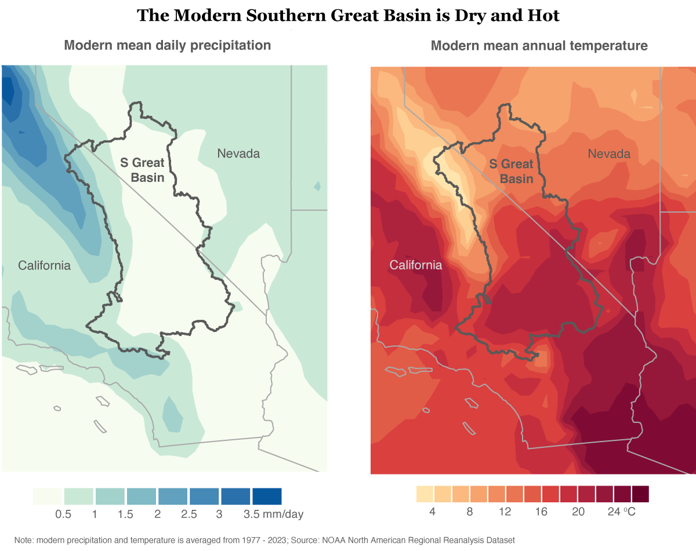
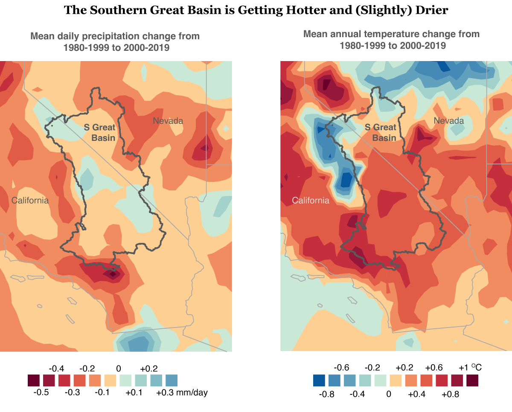
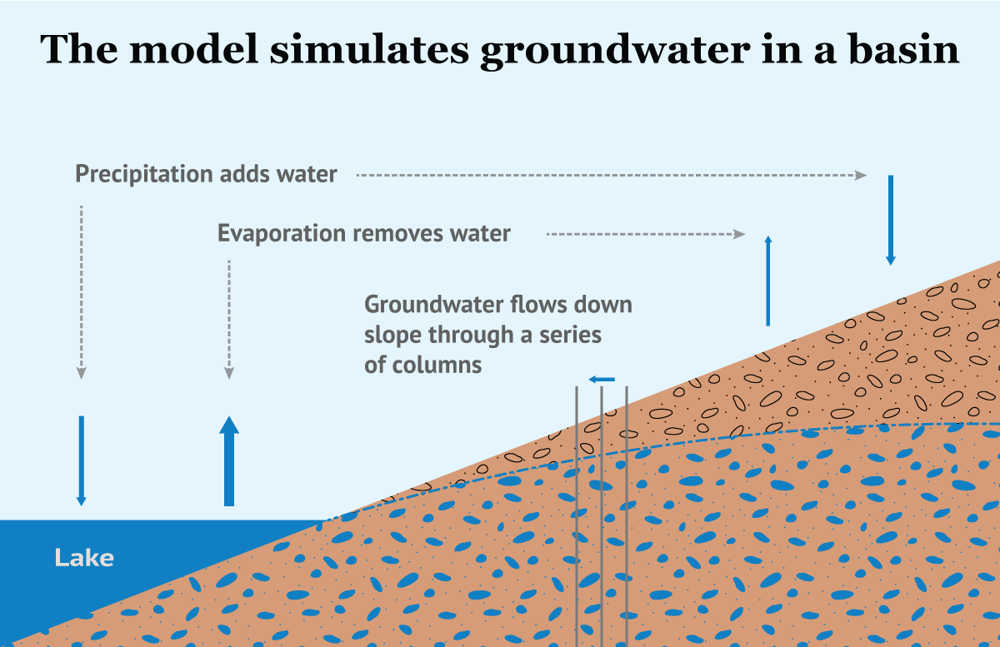
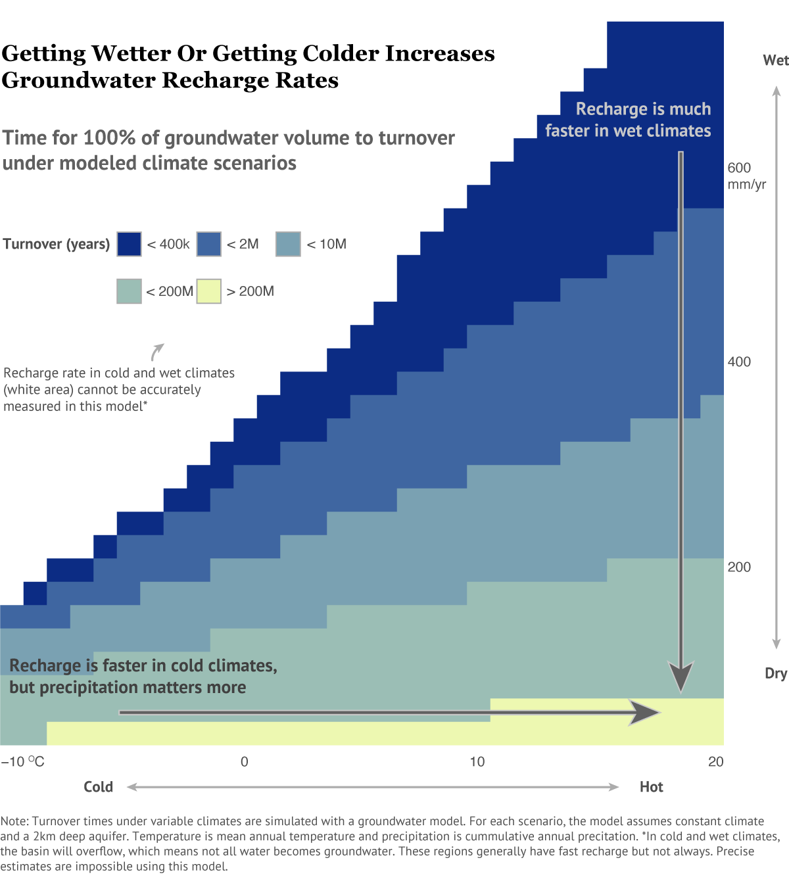
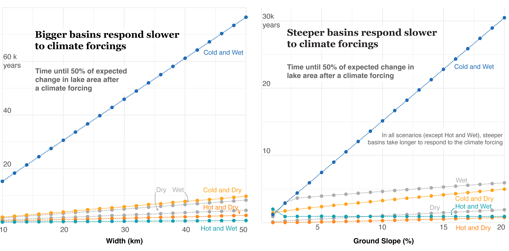

Daniel Graves
Groundwater levels are declining across much of the world and the United States. Whether it’s for agriculture, industry, or residential areas, humans are using more fresh water, which often comes from groundwater sources. This depletes the supply that has built up over thousands of years.
But what about a changing climate? What does that mean for our groundwater supplies? Let’s take a look at this through simulations from a groundwater model of the Southern Great Basin.
The Southern Great Basin covers parts of southern Nevada and southern California and is one of the hottest and driest places in the United States.
Additionally, it has become both hotter and drier since the late 20th century.
However, in the deeper past, the climate in the region has been much different, both much colder and much wetter.
To understand what these variable past and future climates mean for groundwater in the region, I built a groundwater model.
The model works by adding water through precipitation, removing water through evaporation, and moving water along the water table gradient. Under different climates (varying precipitation and temperature), evaporation and infiltration vary, and the lake size adjusts until water inputs and outputs balance. In each climate, I determine the amount of groundwater recharge by how fast water is cycling through the system. So, let’s get some intuition for how the rate of recharge varies under different climates.
In wet climates, recharge is much faster than in dry climates: more precipitation means more water flowing through the system. Also, in cold climates, recharge is faster than in hot climates: less evaporation means more water infiltrates into the system. However, temperature variability is less significant than precipitation variability.
One note here is that the values for turnover time from the model are inaccurate because of model uncertainty, but the relative values are good.
Now that we understand how climate influences groundwater over long time scales, what do we know about short term variability? Let’s see how long basins take to respond after the climate shifts. In particular, what features of a basin cause longer or shorter responses?
For these simulations, I introduced one of six climate forcings (wetter; drier; colder and wetter; colder and drier; hotter and wetter; hotter and drier). I then calculated how long basins of varying width and slope took to reach half of the expected lake change. Since lake area determines the balance of water inputs and outputs, it is a good measure for basin sensitivity.
In both bigger and steeper basins, response to climate forcings was slower. In big basins, it takes longer for water to flow through the system, so climate changes have a longer lag time. In steep basins, lake volume has to change much more than in shallow basins, so it takes longer to fill or empty the lake.
Where do we go from here? As we know, groundwater pumping can significantly influence groundwater resources. Climate can too, changing recharge rate by orders of magnitude. As groundwater management becomes a bigger and bigger challenge, local and regional governments should incorporate climate projections into their decision making. Also, given the response variation across different types of basins, regulators should consider how quickly their particular locations might adjust to climate variability.
This work was created as part of my senior thesis at Brown University in collaboration with Daniel Ibarra. It was supported by NSF AGS 2102901 and NSF EAR 2303484 grants to Ibarra.
The climate data used for the first two graphics is available from NOAA. All other data is from my senior thesis research.